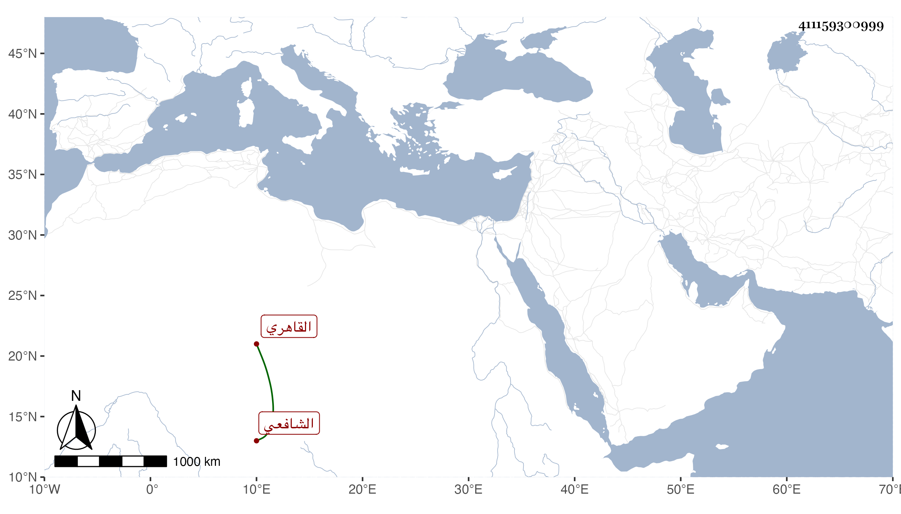

0902Sakhawi.DawLamic.ITO20230111-ara1.EIS1600.411159300999
Biography ID: 411159300999
851
محمد بن محمد بن إبرهيم الشمس أبو عبد الله القاهري الشافعي ويعرف بابن البهلوان وأبوه بابن الجندي وكان صالحا دائم الذكر فنشأ ابنه هذا ومولده قبل القرن بيسير فحفظ القرآن وغيره واشتغل قليلا وجود الخط وأتقن التذهيب وبرع في الميقات ونحوه وقرأ على سيخنا بعض أجوبته وسمع عليه غير ذلك وأدب بني الجمال ناظر الحاص بل ووالدهم قبل واستقر به خازن كتب مدرسته وحطيبها وإمامها وكذا كانت معه مدرسة الامين بن التاج موسى المقابلة للصاحبية مبرات وله به زيادة وثوق لحسن عشرته وأدبه وتواضعه وسمته وميله للفقراء وانجماعه. مات في رابع رجب سنة خمس وستين وقد قارب السبعين رحمه الله وإيانا.
